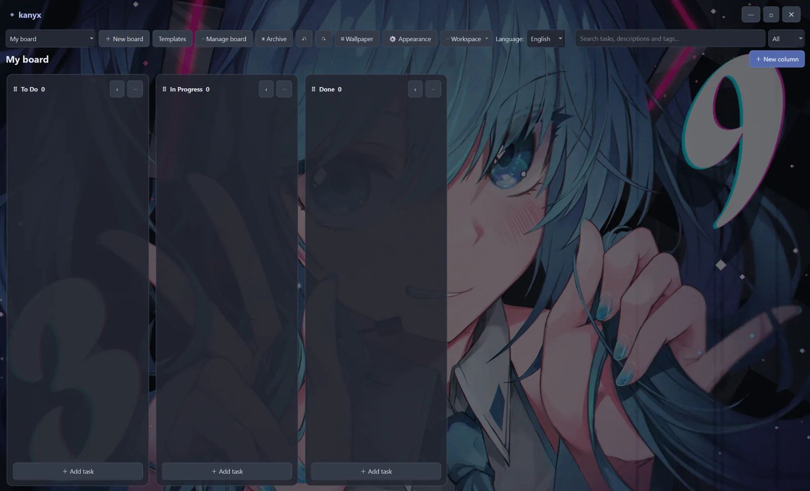

Boards that make sense
Move cards between columns with drag and drop. Keep projects structured without losing the big picture.
OPEN SOURCE · OFFLINE BY DESIGN
A simple Kanban board that lives on your computer, not in someone else's cloud. Plan projects, move tasks, and get things done — your way.
v1.0.1Free foreverNo account required

No complex setup. No collaboration dashboard you didn't ask for. Just your tasks, thoughtfully organized.
Move cards between columns with drag and drop. Keep projects structured without losing the big picture.
Priorities, tags, due dates, checklists, attachments and Markdown descriptions — all in one place.
Customize wallpapers, transparency and text size to create a workspace that feels like your own.
Export an entire workspace as a .kanyx file, including attachments, and import it elsewhere.
Search tasks, descriptions and tags. Work faster with shortcuts and an uncluttered desktop interface.
Use Kanyx in 13 languages: English, German, Spanish, French, Japanese, Korean, Italian, Simplified Chinese, Brazilian Portuguese, Polish, Russian, Hindi and Arabic.
You don't need a server, an internet connection, or a separate Python installation to run the Windows release.
Explore keyboard shortcutsGet the Windows ZIP and extract the entire folder to your computer or a writable USB stick.
Keep _internal/ beside the executable. Your local data/ folder is created automatically.
Create boards, add tasks, set a wallpaper, and export a workspace backup whenever you like.
Choose your platform. Both versions are provided as portable ZIP archives, with no installer.
Tested on Windows and on a USB stick. Portable, no additional Qt or Python installation needed.
Download Windows ZIPBuild available for testing. Desktop libraries may be missing; not yet verified on a real Linux system.
Download Linux ZIPThis is v1.0.1, a stable Windows update. The Linux build remains experimental. Now with 13 languages, localized filter controls and an insertion guide for column dragging. Found a bug? Report it on GitHub. Full source and third-party license information is available in the repository.
Kanyx is a hobby project built to be useful, not a subscription service. Ideas, suggestions and constructive feedback are always welcome.